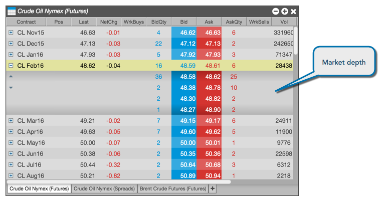
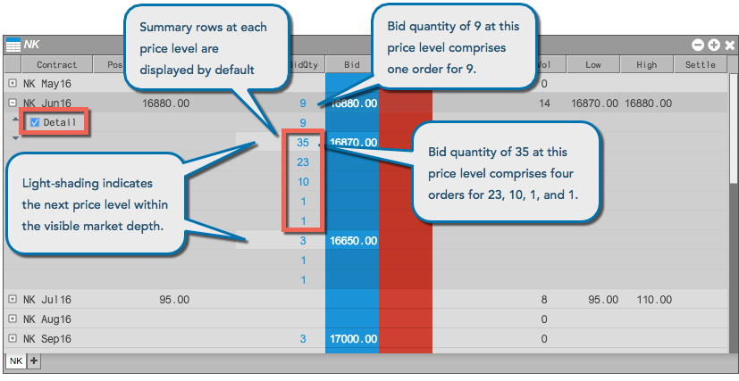
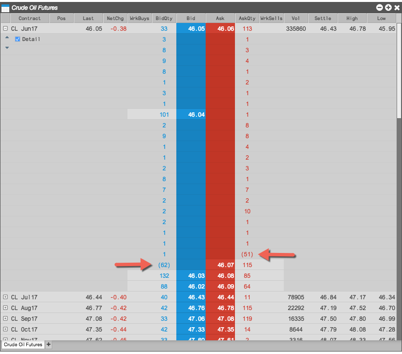
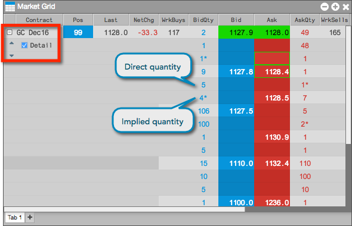
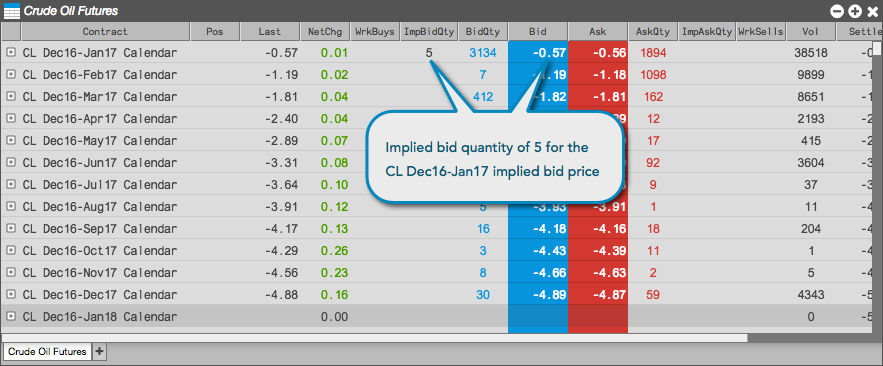
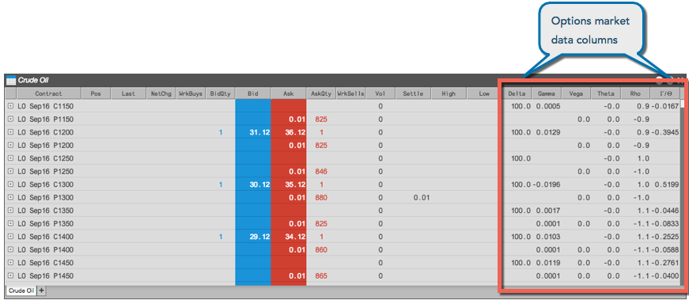

The Market Grid displays market data for multiple instruments across multiple exchanges in a concise format. Users may add or hide columns to display various market data fields and can choose to expand the display of an instrument to display market depth.
The Market Grid can be expanded to display market depth for one or more instruments to the extent that an exchange disseminates the data. When a row is expanded, the aggregated bid or ask quantity is displayed for each price level.

Some exchanges disseminate detailed depth allowing you to see every order at a price level. When a row is expanded to display detailed depth, you can see the quantity of each individual order at a price level to the extent an exchange disseminates that data. {% include detailed-depth.html %}

When there are more levels of detailed depth available than can be displayed in Market Grid for a price level, the last row shows the remaining quantity in parenthesis.

For markets that provide detailed depth, the Market Grid separates direct bid and ask quantities from implied bid and ask quantities at each price level. When viewing detailed depth for these markets and products, the implied quantities are listed below the direct quantities and marked with an asterisk (*).

The display of summary rows and prices at each level of detailed depth is configurable in the Market Grid local settings.
Market Grid supports a Live Only mode that allows you to hide instruments that are not currently being traded. When you enable Live Mode, the Market Grid displays only instruments that have an active bid, active offer, or last-traded price (LTP).
The Market Grid supports implied prices, which are tradable prices that are synthetically generated from orders in outright contracts and spreads. There are two types of implied prices:
The Market Grid displays the implied bid and ask order quantities for the spread and outright markets and displays the implied prices based on these orders. For example, a bid of 10 for the CL Dec16 contract and an offer of 5 for the CL Jan17 contract creates a quantity of 5 for the implied bid for the CL Dec16-Jan17 spread. The implied order quantity of 5 is displayed in the ImpBidQty column for the CL Dec16-Jan17 Calendar spread in the Market Grid.

The Market Grid displays indicative or theoretical open prices and quantities that are provided by the exchange. Indicative or theoretical open prices and quantities are typically provided during Pre-Open or Auction market states.
If an exchange provides a pre-open or auction price or quantity, the values are displayed in the optional IndPrc (indicative open price) and IndQty (indicative quantity) columns in the Market Grid. The indicative Bid and Ask prices for the instrument are displayed in the Bid and Ask columns during the Pre-Open or Auction market state.
An indicative settlement price published by an exchange is displayed in the IndSettle column. For example, if an exchange sends an intra-day settlement price, it will be displayed in this column.
To show/hide these columns in the Market Grid, right-click in the Market Grid, click Set Market Grid columns in the context menu and select IndPrc, IndQty, and IndSettle. For a description of the Market Grid columns, refer to Market Grid Reference.
If provided by the exchange, quantities of resting Buy/Sell pre-open orders, as well as "On Auction" and "On Close" orders during Auction states are displayed in the BidMktQty and AskMktQty columns in Market Grid. The Bid market quantity (BidMktQty) column displays the total quantity of resting Buy Market orders, and the Ask market quantity (AskMktQty) column displays the total quantity of resting Sell Market orders.
The Market Grid also provides market data specifically targeted for options contracts that you can expose by showing their columns in the grid.

You can display the options values by showing the following Market Grid columns through the Market Grid settings.